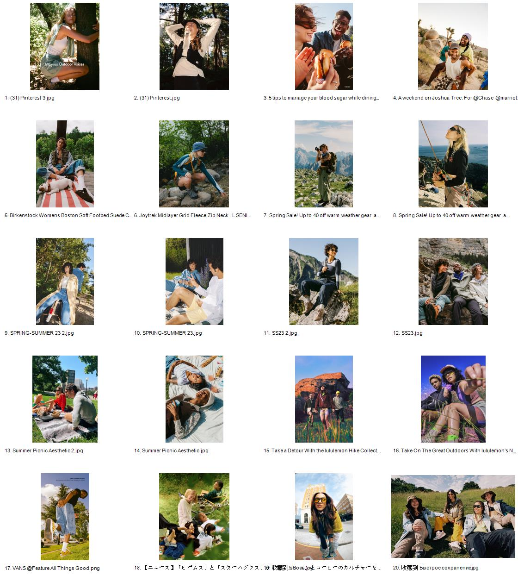

01
City Commute
咖啡、通勤包、街角、地铁口。让用户先看到这是能进入日常穿搭和工作日移动的壳。
手机动作：单手握持、放包、看消息
Q3 Air Summer Visual Direction
页面要表达的不是“更年轻的彩色壳”，而是同一套可靠 Air 结构进入夏天后的轻装版本。它适合通勤、咖啡店、公园、trail、road trip 和短途旅行之间高频切换的人。

用这套标准判断参考图是否能进入页面：能不能同时承载夏日感、成年人状态、轻行动场景和手机壳的功能理由。
模特轮播建议按照“生活流”拆，而不是拆成几类抽象人群。这样更容易拍，也更容易让官网用户代入。
咖啡、通勤包、街角、地铁口。让用户先看到这是能进入日常穿搭和工作日移动的壳。
trailhead、树影、石头、小路。保持轻户外边界，不拍成专业登山。
车内导航、短途旅行后备箱、充电线、水瓶。把支架和磁吸变成真实路上需求。
公园野餐、朋友围坐、看内容、视频通话。保留夏日社交，但不要变成纯情绪大片。
这些参考不是为了照搬画面，而是为了提取页面语言：行动感、轻户外、随身装备、真实 trail。
参考从城市运动延伸到 trail 的叙事，适合借鉴动线、服装和“不硬核”的行动感。
轻松、亲近自然、彩色但不幼稚，适合参考人物状态和自然场景里的色彩控制。
成年人户外穿搭、岩石、山地、草地场景，机能但不笨重。
从 studio 和城市生活过渡到 trail 的视觉语境，贴合城市轻行动人群。
把手机壳讲成 performance + style 的随身装备，适合参考场景跨度。
户外复古配色、耐用材料、手机壳和包/配件一起成为日常装备。
参考导航、车载、骑行、移动场景里的手机使用方式，只取“手机是行动工具”的逻辑。
真实徒步者、小细节、触感和移动过程，不只拍壮阔风景。
这部分可以直接给摄影、设计或 AI 出图时使用，确保画面不偏回 hue 或纯海边情绪。